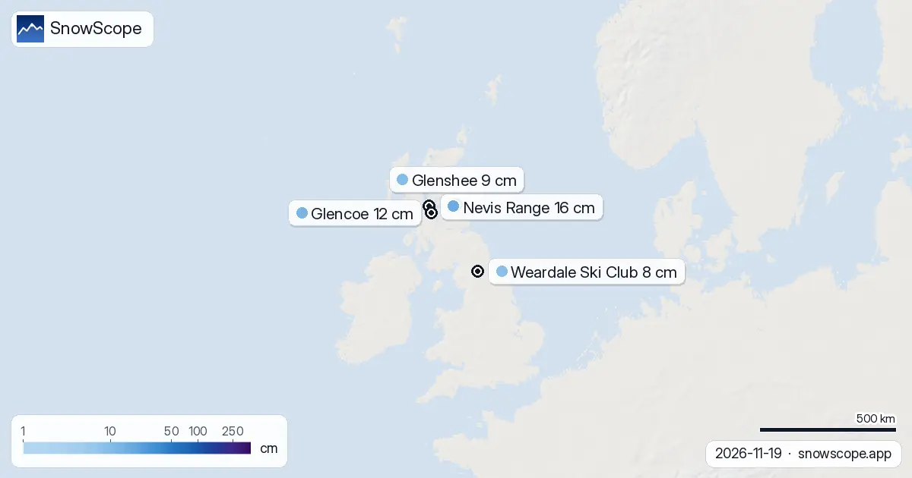
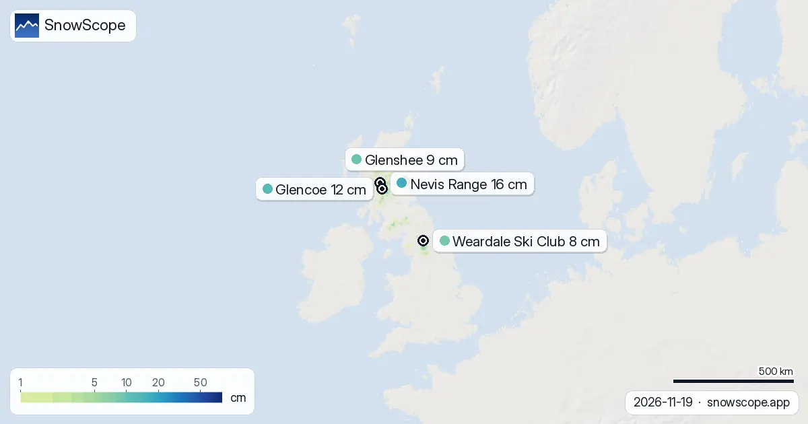

The UK or Norway? Where the snow is better on 19 November
On 19 November, the gap between the UK and Norway is stark. While 10% of Britain's high ground lies under snow, 89% of Norway's does. The difference in depth tells the same story: Nevis Range leads the UK at 16 cm, but across the North Sea, Riksgränsen holds 167 cm.
See the live snow forecast for Nevis Range in the SnowScope appSnow depth, powder alerts and the 3D map, free.
Why the UK is so much drier
The UK's white area fell to 3,800 km² today, down 980 km² from yesterday. A week ago it stood at 4,940 km², so 1,140 km² has melted or never arrived. The storms that bring snow to the mountains tend to travel north-east; when they hit Scandinavia, the UK often sits in their shadow.
Ireland, meanwhile, is entirely bare: 0% coverage. This tells you how southern the weather pattern has been. Norway, by contrast, sits in the path of Atlantic systems that dump snow over and over. Their resorts gain while ours lose ground.
| Country | White | Deepest resort | Next 7 days |
|---|---|---|---|
| UK | 10 % | Nevis Range | 12 cm |
| Ireland | 0 % | Ski Club Of Ireland | 0 cm |
| Norway | 89 % | Riksgränsen | 33 cm |

Which UK resorts have the most snow
Nevis Range holds 16 cm and leads the UK. It has picked up only 5 cm in the last three days, so the snow there is older. The next tier—Glencoe (12 cm), Glenshee (9 cm), Weardale Ski Club (8 cm) and Lowther Hills (8 cm)—all received more recent snow, between 8 and 18 cm over 72 hours.
Ten resorts out of thirty have snow at all. Glencoe and Weardale have benefited most from the recent storms: Glencoe took 8 cm in three days, Weardale took 18 cm. That fresh powder makes them worth considering even if their base is thinner than Nevis Range.

Height decides your options
Above 1,000 m the picture changes completely. At that altitude, 100% of the ground is white and the base averages 8 cm. These runs are continuous. Between 500 m and 1,000 m, only 31% of the ground has snow; expect to see grass and rocks. Below 500 m, almost nothing.
This is why higher resorts matter more in November. Nevis Range rises to 1,190 m, Glencoe to 1,079 m, Glenshee to 1,028 m. When you pick a run, stay above 1,000 m if you want a true snow base. Lower slopes will be patchy and thin.
What the next week brings
No new snow arrives in the next three days. Tuesday 24 November then stands out: up to 8 cm is forecast. After that, the week of 27 November to 3 December could see up to 14 cm where it falls—enough to make a real difference.
Until then, today's pattern holds. Any trip this weekend will find the same thin coverage, so plan for upper-slope runs and expect rocks to be close to the surface in many places.
How the week has played out
On 16 November the UK had 5,740 km² of snow. By 17 November that rose to 5,870 km²—a brief peak. Then it fell to 4,300 km² on 18 November, then to today's 3,800 km². The trend is downward. Nevis Range and Weardale Ski Club have swapped the leader's spot twice, but the overall story is loss.
Three days of wind and mild air have eaten into the coverage, even as fresh snow fell in the south and east. The pattern is typical for early season: snow arrives, but survival is not guaranteed.
The storm geography
Three separate zones caught the recent snow: the Southern Uplands received 19 cm in three days, Glencoe 18 cm, and Glenshee and the Grampians 16 cm. About 1,680 km² received at least 5 cm. But notice that these are scattered spots, not a blanket. The snow line sits around 700 m, below which almost everything is bare.
Norway's situation is reversed. Their mountains are uniformly white because storms reach them regularly and cold air keeps the snow stable. The UK's position on the Atlantic fringe means snow is a gift, not a guarantee. When it comes, you must use it.
Tips for skiers
- Ski above 1,000 m where the cover is complete. Lower slopes still show rocks and mud between patches.
- Glencoe and Weardale have the freshest snow if you want to feel recent powder, though Nevis Range has the thickest base.
- Early-season snow is thin and may hide rocks: start on groomed runs until you know the terrain.
- No new snow is due for three days, so conditions will stay as they are today. If you go this weekend, go soon.
- Check the resort's own lift status before you travel; some may not operate on marginal snow.
About these numbers
Resort snow depths are the deepest snow on the resort's upper slopes on the date shown; they are estimates for an area, not a measurement at one point. Forecasts can change. Always read the official avalanche bulletin before going off-piste.
Cite this report
For research, teaching or the press: the numbers and charts are free to reuse under CC BY 4.0 with this citation.
SnowScope (2026), The UK or Norway? Where the snow is better on 19 November, https://snowscope.app/blog/en/2026/11/uk-snow-vs-neighbours-19-november-2026.html, accessed 2026-11-19
SnowScope (Atlas Labs). (2026, November 19). The UK or Norway? Where the snow is better on 19 November. SnowScope snow reports. https://snowscope.app/blog/en/2026/11/uk-snow-vs-neighbours-19-november-2026.html
BibTeX
@misc{snowscope2026uksnowvsneighbours19nove,
author = {{SnowScope (Atlas Labs)}},
title = {The UK or Norway? Where the snow is better on 19 November},
year = {2026},
month = nov,
howpublished = {\url{https://snowscope.app/blog/en/2026/11/uk-snow-vs-neighbours-19-november-2026.html}},
note = {Published 2026-11-19 13:23 UTC; accessed 2026-11-19}
}· CC BY 4.0 · Methods, data and tools →
Nevis Range: snow and temperature by height, this winter vs last (tools) →
Follow Nevis Range
Free: a message when fresh snow is coming, and the forecast every morning.
More snow reports

Savin Kuk above Žabljak picked up 22 cm of snow from 13 to 19 November and still has 6 cm today. Kolašin 1450 and 1600 are bare. The week day by day, and the next chances.

Up to 30 cm of snow fell on northern Velebit and Bjelolasica on Friday 13 November 2026. By Tuesday it was gone. Day by day, what the mountains kept, and when snow comes back.

Only Borovets and Bansko have a trace of snow at the top today, 2 cm each. A week ago Borovets had 11 cm. Day by day, and the one snowy day in the forecast.